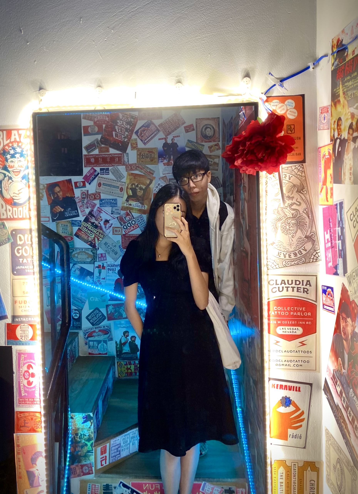
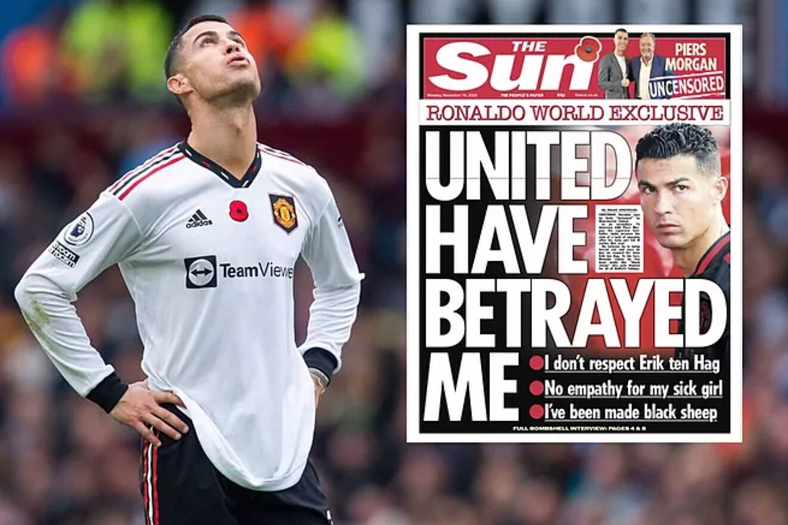

<!DOCTYPE html>
<html lang="en">
<head>
    <meta charset="UTF-8">
    <meta http-equiv="X-UA-Compatible" content="IE=edge">
    <meta name="viewport" content="width=device-width, initial-scale=1">
    <title>Manchester United</title>
    <link rel="icon" href="assets/img/Red-Devils-logo.png">
    <link rel="stylesheet" href="assets/css/main.css">
    <link rel="stylesheet" href="assets/css/base.css">
    <link rel="stylesheet" href="assets/css/news.css">
    <link rel="stylesheet" href="assets/fontawesome-free-6.2.0-web/css/all.css">
    <link rel="stylesheet" href="assets/css/responsive.css">
</head>
<body>
    
</body>
</html>
<body>
    <header class="header">
        <a href="index.html" class="header__return">
            <p>
                back to home
            </p>
        </a>
    </header>
    <div id="main-2">
        <div class="content">
            <h2 class="title__post">Ronaldo wants to leave Mu at Winter Transfer Windown</h2>
            <div class="author">
                <div class="author__avatar">
                     
                </div>
                <div class="author__in4">
                    <span class="author__name">Written by Đỗ Duy Cương</span>
                    <span class="author__details">Studying at Ho Chi Minh University of Technology</span>
                </div>
            </div>
            <p class="paragraph1">A few hours after MU's 2-1 victory over Fulham in the 16th round of the Premier League, 
                journalist Piers Morgan publicly quoted a video of the Ronaldo interview program.
                In this interview, CR7 did not regret disparaging the MU owner team, from the conditions of the facilities, players, leadership, head coach Erik Ten Hag and former interim coach Ralf Rangnick.
                Even the 37-year-old superstar claimed that he was "tried to push away from the club by a few people".
            </p>
            <p class="paragraph1">In the summer transfer period of 2022, Ronaldo also contacted many "big guys" such as Chelsea, Atletico, Napoli, Dortmund, all of them were not interested in CR7 in the end.
            </p>
            
            <p class="paragraph1">However, recently, Ronaldo suddenly received a "signal" from his old team Sporting Lisbon. In an interview with Ojogo, Ruben Amorim, head coach of Sporting Lisbon admitted that the team members "liked" CR7.
            </p>
        </div>
        <div class="Sharing">
            <span>Share this post to your friend on</span>
            <div class="follow">
                <div class="follow__icon">
                    <a href="" class="follow__icon-link">
                        <i class="fa-brands fa-facebook"></i>
                        <span class="follow__icon-link-text">Facebook</span>
                    </a>
                </div>
                <div class="follow__icon">
                    <a href="" class="follow__icon-link">
                        <i class="fa-brands fa-instagram"></i>
                        <span class="follow__icon-link-text">Instagram</span>
                    </a>
                </div>
                <div class="follow__icon">
                    <a href="" class="follow__icon-link">
                        <i class="fa-brands fa-twitter"></i>
                        <span class="follow__icon-link-text">Twitter</span>
                    </a>
                </div>
            </div>
        </div>
    </div>    
    <footer class="footer">
        <div class="Copyright">
            <span>© 2022. Bản quyền thuộc về Cương Đỗ Duy.</span>
        </div>
    </footer>
</body>
</html>